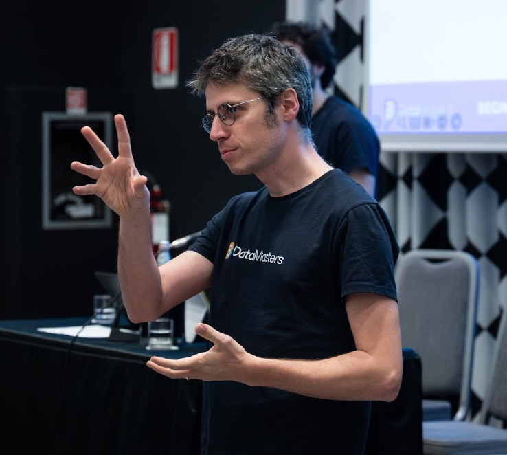

Ciao, sono Giuseppe Mastrandrea.
Insegno informatica all'ITT Panetti-Pitagora di Bari, accompagno le scuole nella trasformazione digitale e faccio formazione per Data Masters su IA e IA generativa.

Talk e interventi
-
Verifica documentale automatizzata con IA locale nella scuola
Didamatica 2026 · Padova · 8–9 ottobre 2026
Guarda le slide (PDF) →